About
I wanted to learn the basics of computational fluid dyanmics, and after some searching I found resources from Prof. Barba's Computational Fluid Dynamics class at Boston University. These resources give step by step instructions on how to build up to soliving the Navier-Stokes Equation in Python. Although I rewrote the code as I followed along, all credit is given to Prof. Barbara. This activity wasa way to teach myself the basics by following along her work and experimenting with it along the way.
Below I demonstrate a few of the 12 steps taught. If you want to see the code for all the steps they can be found here.
Linear Convection in One Dimension
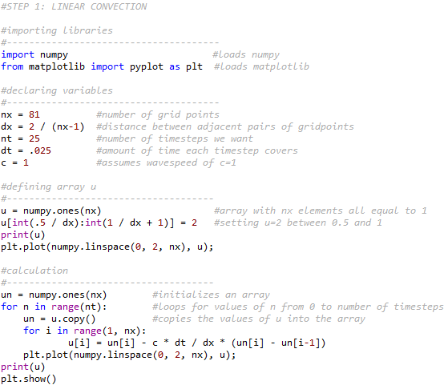

Diffusion in One Dimension
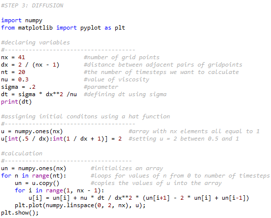

Linear Convection in Two Dimensions
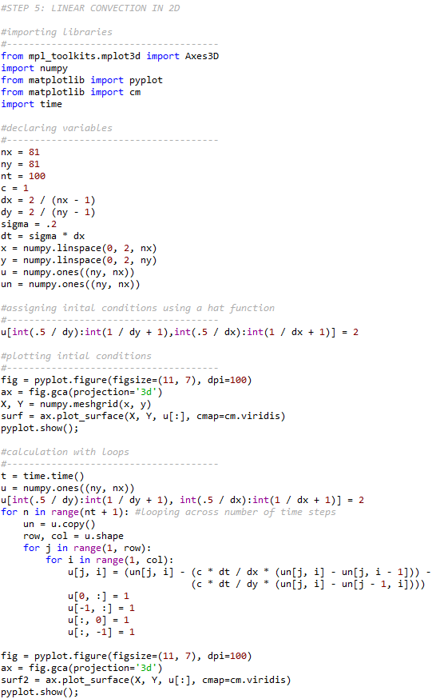
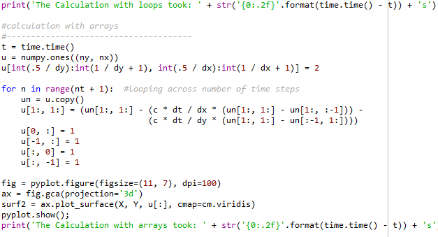
Below is the graph of the initial conditions.

Below is the graph using loops.

Below is the graph using arrays. Comparing the time between both methods, it is evident that using arrays is more efficient.

Diffusion in Two Dimensions
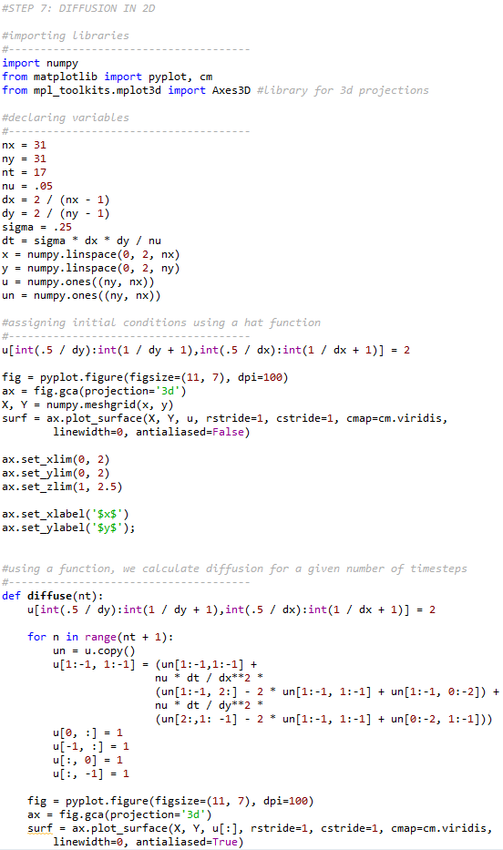
Below is the diffusion after one time step.
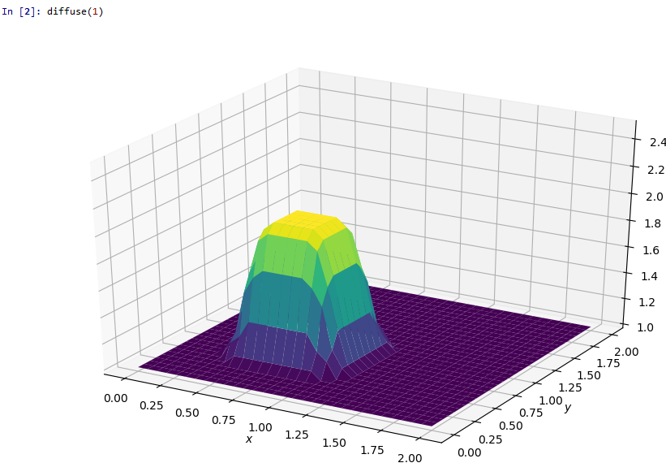
Below is the diffusion after ten time steps.
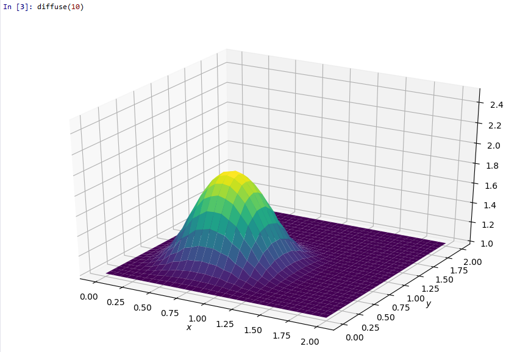
Below is the diffusion after one hundred time steps.
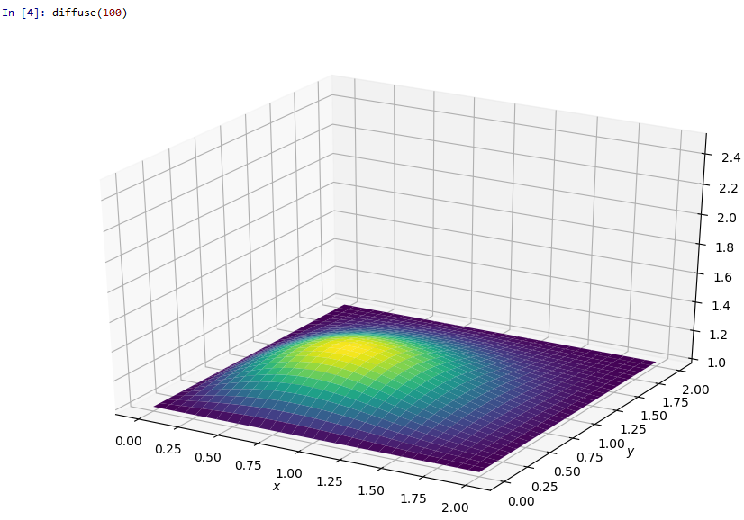
Poisson Equation in Two Dimensions
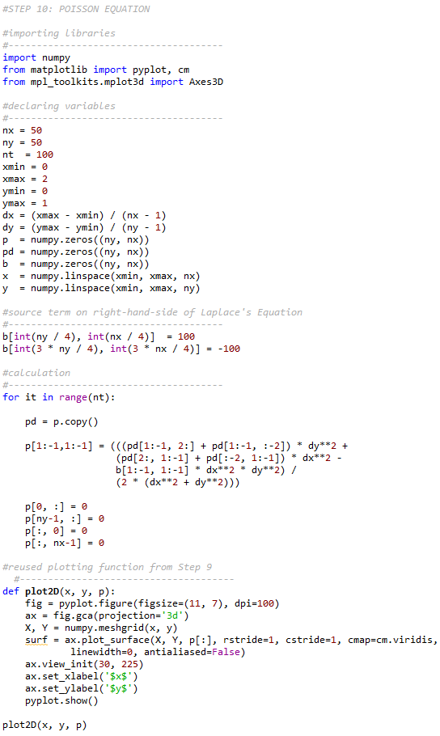 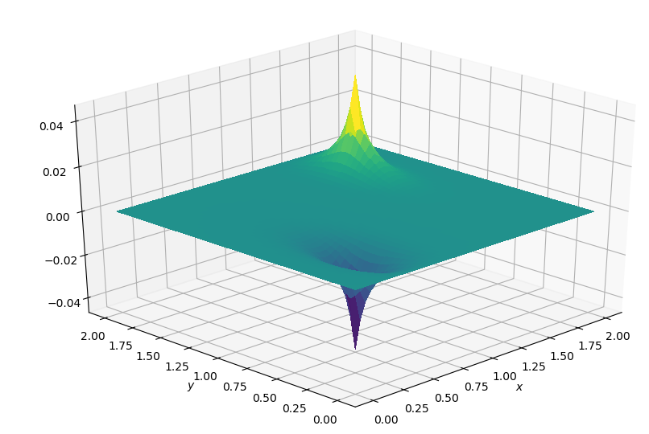
Solving the Navier-Stokes Equation in Two Dimensions (Channel Flow)
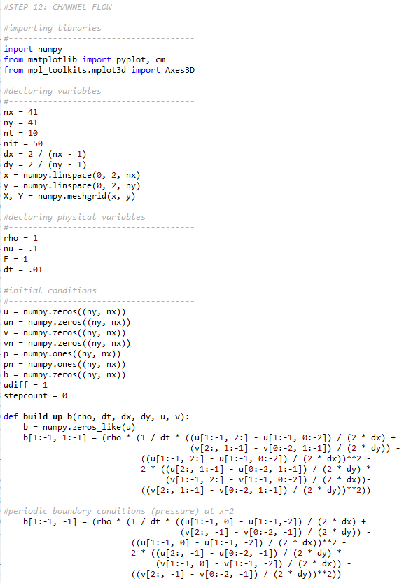 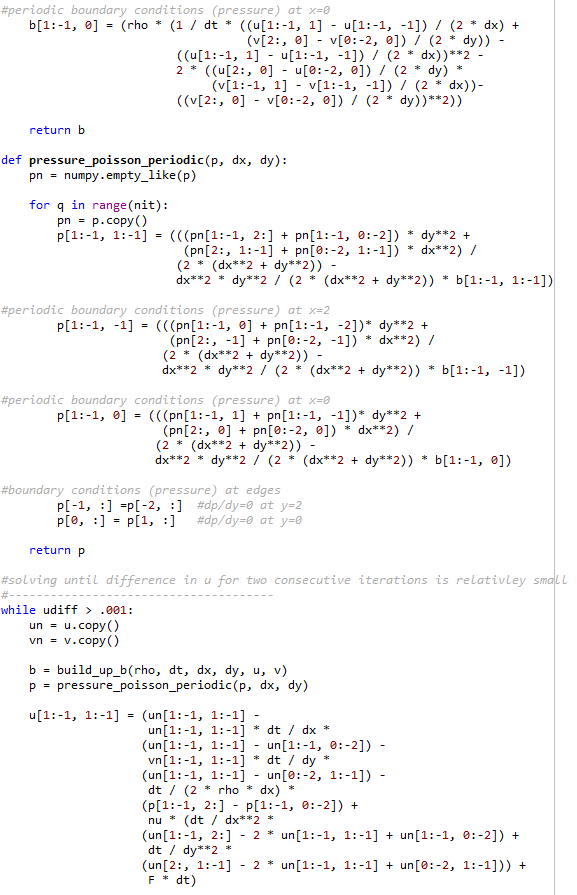 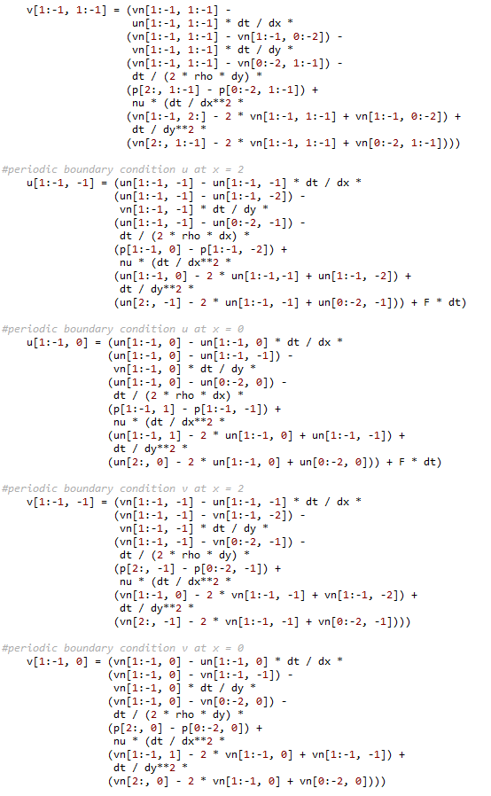 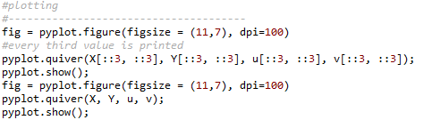 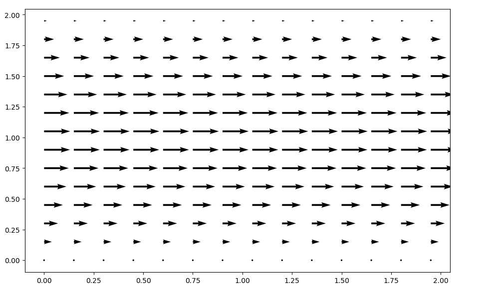 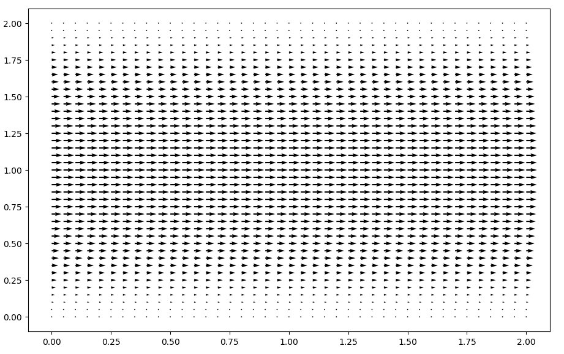